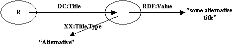
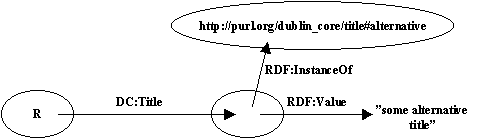
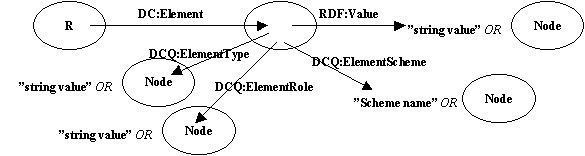
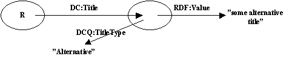
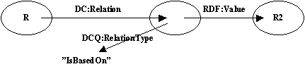
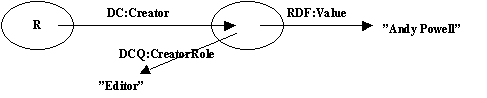
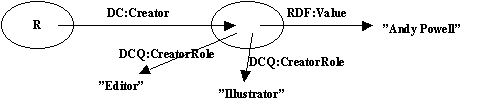

Andy Powell - 24/06/98
The first day started with introductions and identifying the purpose of the meeting. We agreed that we hoped to:
There was some discussion about the 5 RFCs - about what shoulod be in them, etc. The primary agreement here was that RFC#1 should come out asap.
I would say that most discussion during the 3 days concentrated on the notion of 'what is qualification' and how it can be represented in RDF.
We started with a discussion of the applicability of the RDF model for DC. Does it form a sensible basis for the DC model? It was agreed that it could be. The one point of contention was the notion of identifiers. In RDF everything being described must have a URI. In DC this has not been the case up until now - identifier, like all elements, is optional. So to a certain extent the use of RDF moves us away from the notion in DC that all elements are optional? Also, although everything can be assigned URIs (using UUIDs for example), operationally it may not be desirable for people to have to generate arbitrary URIs for objects before they can describe them using DC in RDF?
The use of the term 'resource' in RDF is slightly confusing. In RDF all nodes are resources, some nodes represent real world objects (Web pages, etc.) some do not. We agreed that we needed some terminology for RDF resources, real world resources and resources that are both. During the meeting we used the term 'resource' in a normal library/Internet way. We used the term 'RDF resource' for nodes (i.e. where RDF uses the term resource).
We looked thru all/most of the 15 DC elements at a high level and agreed that they all followed the pattern below:
[ R ] --- DC:Element ---> [ R2 ]
or
[ R ] --- DC:Element ---> "string value"
where R is the URI of the resource being described and R2 is the URI of a second resource. It was noted that R2 may be one of two things:
It was suggested that the latest version of the RDF spec makes it possible to differentiate between these two.
So, for example, for DC.Rights we would have:
[ http://www.ariadne.ac.uk/ ] --- DC:Rights ---> [ http://www.ariadne.ac.uk/copyright.html ]
or
[ http://www.ariadne.ac.uk/ ] --- DC:Rights ---> "some rights statement"
There is an exception to this high level similarity between all the elements. Identifier has three valid forms:
[ R ]
[ R ] --- DC:Identifier ---> "string"
[ R ] --- DC:Identifier ---> [ R2 ]
This is because the node labelled 'R' on its own provides the URI for the resource being described. The DC:Identifier property should only be used to provide additional identifiers for a resource.
The notion that qualification can take two forms was discussed. Some qualifiers, role and type, refine the meaning of the element - in RDF terms they refine the property. Consider
[ R ] --- DC:Title ---> "xxxx"
A Title Type of Alternative, for example, refines the meaning of the DC:Title property.
Other qualifiers tell you something about the value of the property. Consider
[ R ] --- DC.Date ---> "1998-04-05"
A Date Scheme of ISO 8601 tells us something about the syntax/format of the date string value.
There was some discussion about whether the mechanism that we define to handle these two kinds of qualifiers needed to differentiate between the two.
In a strict RDF model, the first kind of qualification (refining the property), would be handled using reification. This is the process by which a property becomes a resource so that other statements can be made about it. Reification is typically used so that you can make assertions about who said that 'xxxx' is the DC:Title for [ R ]. Despite a long discussion about the use of reification for our purposes (refining a property) we concluded the day by saying that the RDF arc-node diagrams and associated XML syntax for reified graphs were too complex to consider as part of the DC data model.
It was agreed that, in the DC data model, a Role is a Type but not vice versa, i.e. that any agreed mechanism for handling Types in DC would be sufficient for Roles.
Charles' paper introduces the notion of an Annotation Node as a way of handling Roles and Types. Here's an example of an Annotation Node:

Note that the XX namespace was undecided at this stage but differentiating it from the DC namespace was seen as a potenial requirement.
Note that the value of RDF:Value and the value of XX:Title.Type are shown as strings here but either or both could be nodes.
An alternative proposition was put forward for handling Roles and Types using InstanceOf arcs. Here's the same example:

Note that in this case the value of RDF:InstanceOf must be a node (and so must have a URI).
A comparison of the two approaches.
InstanceOf
Annotation Node:
Note that the value of Role is typically taken from a long enumerated list. The value of Type is typically taken from a short enumerated list.
Annotation nodes were agreed as the best way of handling Roles and Types. Some work over night developed a similar way of handling Schemes.
Should the value of an Annotation Node be a string or a node?
Strings are:
Nodes:
No decision was reached on this issue.
By the final day, and after much drawing of arc-node diagrams we had developed a simple template for the way in which Roles, Types and Schemes are represented within the RDF model.

Note that the namespace for qualifiers is DCQ - i.e. it is separate from the normal DC namespace.
Note that all values for DCQ properties could either be strings or nodes (to be decided). In the examples below values are shown as strings to save showing them as either strings or nodes in each case.
We then proceeded to apply this to all or most of the 15 DC elements. Diagrams follow:
DC.Title

DC.Relation

DC.Subject
See examples at <URL:http://www.ukoln.ac.uk/metadata/resources/rdf/examples/5/>
DC.Creator

...repetition of roles...

...personal vs. corporate...
There was some discussion about the personal vs. corporate debate. Some people felt that person/organisation was really a scheme thing. In the end we decided to push the problem into another namespace (i.e. make it someone elses problem). For example we might ask the vCard people to introduce a specific attribute into the vCard proposal that differentiates people from organisation - current vCard doesn't have this distinction.
Most of the meeting concerned arc-node diagrams. XML serialisation syntax was considered at various times. An example was given of how the abbreviated syntax can be used. The abbreviated syntax has some advantages in that it looks more like what people would be likely to come up with if they simply invented their own DTD for describing Web resources. It's disadvantage is that it is difficult to go straight from an arc-node diagram to the abbreviated syntax (and get it right). Better to go to the full syntax first, then abbreviate it.